Introduction
Web-based VR
Let's start
Load in the following https://trinket.io/embed/html/850a678202
Now replace the code with the following or for a quick fix copy the code from https://bit.ly/AframeIntro:
<html>
<head>
<script src="https://aframe.io/releases/1.2.0/aframe.min.js"></script>
</head>
<body>
<a-scene>
<a-box position="-1 0.5 -3" rotation="0 45 0" color="blue"></a-box>
<a-sphere position="0 1.25 -5" radius="1.25" color="red"></a-sphere>
<a-cylinder position="1 0.75 -3" radius="0.5"
height="1.5" color="#FFC65D"></a-cylinder>
<a-plane position="0 0 -4" rotation="-90 0 0"
width="4" height="4" color="#7BC8A4"></a-plane>
<a-sky color="#ECECEC"></a-sky>
</a-scene>
</body>
</html>
You should now see something that looks like:

Click on the the image on screen and play with using the arrow keys and dragging a mouse around. What is the difference between using the arrow keys and the mouse?
Okay now we are going to add some text.
Insert the line:
<a-text value="Welcome to Computing at CCCU"></a-text>
Can you see it? You will need to use the arrow keys to see and even it is difficult - white writing on a grey background.

So let us make it a bit easier to see by change the code slight and specify the text colour as black:
<a-text value="Welcome to Computing at CCCU" color="black"></a-text>
Challenge
-
Look through the course material and find a module that interest you and change the message so it welcome people to that module.
-
Experiment with repositioning any of the objects including the text, you may have noticed that some of the objects had a
position=in their 'coding'; try changing some numbers within one of these, one and at time and work out how they work. -
There are a number of different objects we can put into the scene some of these are listed within the left-hand menu of
<https://bit.ly/AframeIntro>under the headingPrimitives. Try a few out for yourself.
Try it out
<html>
<head>
<script src="https://aframe.io/releases/1.2.0/aframe.min.js"></script>
</head>
<body>
<a-scene>
<a-box position="-1 0.5 -3" rotation="0 45 0" color="blue"></a-box>
<a-sphere position="0 1.25 -5" radius="1.25" color="red"></a-sphere>
<a-cylinder position="1 0.75 -3" radius="0.5"
height="1.5" color="#FFC65D"></a-cylinder>
<a-plane position="0 0 -4" rotation="-90 0 0"
width="4" height="4" color="#7BC8A4"></a-plane>
<a-sky color="#ECECEC"></a-sky>
<a-text position="-2 2 -3"
animation="property: rotation; to: 0 360 0; loop: true; dur: 10000"
value="Welcome to Computing at CCCU" color="black">
</a-text>
</a-scene>
</body>
</html>
Web-based VR and AR
Planet Canterbury Christ Church
Setting up
Using Mozzila's brilliant AFrame, a web-based Virtual Reality model of a planet with rings and include a moon with an image on it. The first step is to set a new site in trinket (or use the old one) and then add a white sphere on a black background:
<html>
<head>
<script src="https://aframe.io/releases/
0.9.2/aframe.min.js"></script>
</head>
<body>
<a-scene>
<a-sphere position="0 1.25 -5" radius="3"
color="white" >
</a-sphere>
<a-sky color="black"></a-sky>
</a-scene>
</body>
</html>
Using the Aframe tags to create a white sphere and to create a black background.
Rotate the planet and add some colour
Now we can add a surface to the planet by finding an appropriate image to wrap around the sphere. in this example, I used the site Solar Systems Scope https://www.solarsystemscope.com/textures/ and downloaded an image of Jupiter's surface https://www.solarsystemscope.com/textures/download/2k_jupiter.jpg.
{kind=link}
-
If you are using Glitch: This needs to be copied into the assets folder of the project and the URL generated (by left-clicking on the image when it is in the folder) copied.
-
On you own site upload the image to the same folder as the webpage the
URLwill be filename -
Alternatively use this URL in either approach https://cdn.glitch.com/febf6408-3c33-4608-ac90-b087753e5792%2F2k_jupiter.jpg?v=1573393224376
{kind=link}
Now by adding src="" and in the speech-marks paste in the URL for the image; the image wraps around the sphere:
<html>
<head>
<script src="https://aframe.io/releases/0.9.2/
aframe.min.js"></script>
</head>
<body>
<a-scene>
<a-sphere position="0 1.25 -5" radius="3"
color="white" src="https://cdn.glitch.com/febf6408-3c33-4608-ac90-b087753e5792%2F2k_jupiter.jpg?v=1573393224376">
</a-sphere>
<a-sky color="black"></a-sky>
</a-scene>
</body>
</html>
Now to rotate it add:
animation="property: rotation; to: 0 360 0; loop: true; dur: 10000"
See below:
<a-sphere position="0 1.25 -5"
radius="3" color="white"
src="https://cdn.glitch.com/febf6408-3c33-4608-ac90-b087753e5792%2F2k_jupiter.jpg?v=1573393224376"
animation="property: rotation; to: 0 360 0; loop: true; dur: 10000">
Planets need Rings
In Aframe if you nest another object with the <> <\> of another object it's position is set relative to the first object. This principle is going to be used here put a ring around the planet.
The first stage is to add the ring object is used for this and a the same rotating animation is used. We are going to use a squashed doughnut shape <a-torus\> to do this. When the webpage is running you will probably need use the down arrow key to zoom out to see the ring.
<html>
<head>
<script src="https://aframe.io/releases/0.9.2/aframe.min.js"></script>
</head>
<body>
<a-scene>
<a-sphere position="0 1.25 -5" radius="3" color="white" src="https://cdn.glitch.com/febf6408-3c33-4608-ac90-b087753e5792%2F2k_jupiter.jpg?v=1573393224376"
animation="property: rotation; to: 0 360 0; loop: true; dur: 10000">
<a-torus position="0 0 0" arc="360"
rotation="90 0 0"
color="white" radius="5"
radius-tubular="0.05"
animation="property: rotation; to: 90 0 0; loop: true; dur: 3000">
</a-torus>
</a-sphere>
<a-sky color="black"></a-sky>
</a-scene>
</body>
</html>
DON'T PANIC: It is not expected that you will necessarily understand this all in one go. So experiment now try different values for;
rotation; to: 90 0 0for exampleto: -360 360 0;anddur: 3000, what changed?
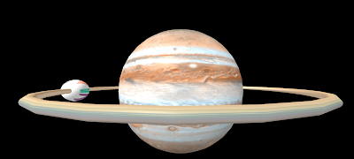
It needs a moon
The process is really just combining elements of the steps 1-3.
Create a new sphere,set the radius to something around 0.25 to 0.5; colour it with whatever you feel is appropriate, add an image (in the example code one has been added) if you want. Set a rotation it is is fun to play with these a bit and place the moon on the ring (setting position="5 0 0" in this case does this). If the images are accessible as web sources this could be a great option.
Lets put a moon on the ring (ie. within the <a-torus> and <a-torus\> tags).
So the code for the moon;
<a-sphere position="5 0 0"
rotation="0 0 0"
radius="0.5"
color="yellow" src="https://cdn.glitch.com/febf6408-3c33-4608-ac90-b087753e5792%2Fpanic.png?v=1573395380360"
animation="property: rotation; to: 0 259 0; loop: true; dur: 3000">
</a-sphere>
Gets put inside that of the torus, so the whole thing becomes:
<html>
<head>
<script src="https://aframe.io/releases/0.9.2/aframe.min.js"></script>
</head>
<body>
<a-scene>
<a-sphere position="0 1.25 -5" radius="3" color="white" src="https://cdn.glitch.com/febf6408-3c33-4608-ac90-b087753e5792%2F2k_jupiter.jpg?v=1573393224376"
animation="property: rotation; to: 0 360 0; loop: true; dur: 10000">
<a-torus position="0 0 0" arc="360"
rotation="90 0 0"
color="white" radius="5"
radius-tubular="0.05"
animation="property: rotation; to: 90 90 0; loop: true; dur: 3000">
<a-sphere position="5 0 0"
rotation="0 0 0"
radius="0.5"
color="yellow" src="https://cdn.glitch.com/febf6408-3c33-4608-ac90-b087753e5792%2Fpanic.png?v=1573395380360"
animation="property: rotation; to: 0 259 0; loop: true; dur: 3000">
</a-sphere>
</a-torus>
</a-sphere>
<a-sky color="black"></a-sky>
</a-scene>
</body>
</html>
Let's add text and stars
So we might want to put some text into the world we can do that with <a-text value=""> So adding this to the code (see below) put a message on the screen, though you may have to use the down arrow to see it.
<html>
<head>
<script src="https://aframe.io/releases/0.9.2/aframe.min.js"></script>
</head>
<body>
<a-scene>
<a-sphere position="0 1.25 -5" radius="3" color="white" src="https://cdn.glitch.com/febf6408-3c33-4608-ac90-b087753e5792%2F2k_jupiter.jpg?v=1573393224376"
animation="property: rotation; to: 0 360 0; loop: true; dur: 10000">
<a-torus position="0 0 0" arc="360"
rotation="90 0 0"
color="white" radius="5"
radius-tubular="0.05"
animation="property: rotation; to: 90 90 0; loop: true; dur: 3000">
<a-sphere position="5 0 0"
rotation="0 0 0"
radius="0.5"
color="yellow" src="https://cdn.glitch.com/febf6408-3c33-4608-ac90-b087753e5792%2Fpanic.png?v=1573395380360"
animation="property: rotation; to: 0 259 0; loop: true; dur: 3000">
</a-sphere>
</a-torus>
</a-sphere>
<a-text value="Planet CCCU Computing" position="0 4 -2"></a-text>
<a-sky color="black"></a-sky>
</a-scene>
</body>
</html>

We can get interesting effects if we add the text between <a-sphere\> and <a-scene\> Try adding this in there. <a-text value="Planet CCCU Computing" position="0 3 -2"><a-text\>
Have a play with altering the text and putting the line elsewhere in the code. What happens?
Now going to use an image to change the background. The image is "space" by fleskw is licensed with CC BY 2.0. To view a copy of this license, visit https://creativecommons.org/licenses/by/2.0.
You will need to change the sky colour to a light colour for this to work. So change the sky line in the code to white we are going to use the space image to make it a bit easier it is in this form https://cdn.glitch.com/425c1a98-7ba9-463d-817d-6b491a516246%2F97b3bf6d-ced1-4041-80d4-b6c9a98ba43d.jfif?v=1614341330757
<a-sky color="white" src="https://cdn.glitch.com/425c1a98-7ba9-463d-817d-6b491a516246%2F97b3bf6d-ced1-4041-80d4-b6c9a98ba43d.jfif?v=1614341330757"></a-sky>
Now adding it the code in place of the current <a-sky\> line we:
<html>
<head>
<script src="https://aframe.io/releases/0.9.2/aframe.min.js"></script>
</head>
<body>
<a-scene>
<a-sphere position="0 1.25 -5" radius="3" color="white" src="https://cdn.glitch.com/
febf6408-3c33-4608-ac90-b087753e5792%2F2k_jupiter.jpg?v=1573393224376"
animation="property: rotation; to: 0 360 0; loop: true; dur: 10000">
<a-torus position="0 0 0" arc="360"
rotation="90 0 0"
color="white" radius="5"
radius-tubular="0.05"
animation="property: rotation; to: 90 90 0; loop: true; dur: 3000">
<a-sphere position="5 0 0"
rotation="0 0 0"
radius="0.5"
color="yellow" src="https://cdn.glitch.com/febf6408-3c33-4608-ac90-b087753e5792%2Fpanic.png?v=1573395380360"
animation="property: rotation; to: 0 259 0; loop: true; dur: 3000">
</a-sphere>
</a-torus>
</a-sphere>
<a-text value="Planet CCCU Computing" position="0 4 -2"></a-text>
<a-sky color="white" src="https://cdn.glitch.com/425c1a98-7ba9-463d-817d-6b491a516246%2F97b3bf6d-ced1-4041-80d4-b6c9a98ba43d.jfif?v=1614341330757"></a-sky>
</a-scene>
</body>
</html>
We are done!
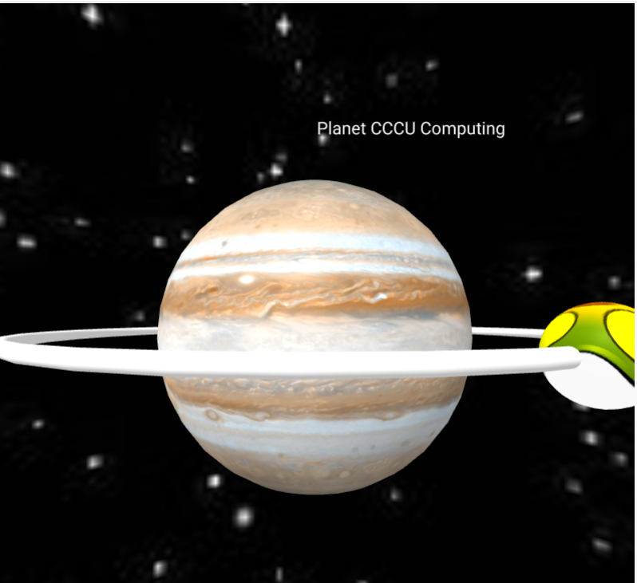
Physical Computing
EGGbot
Inspiration
Three inspirations for this project Eggbot:
-
Femi Owolade supported by Nic Hughes ran a session at Mozilla Festival 2016 using the Crumble's to make a wheeled robot.
-
The junkbot project https://junkbots.blogspot.co.uk/
Kit
-
Kinder Egg (without the Chocolate and toy)
-
Crumble Controller available at https://redfernelectronics.co.uk/shop/
-
4x Crocodile clips and leads
-
Battery pack and 3xAA batteris
-
Vibrating motor or small DC motor with a weight added to the axel
-
Tape (lots of)
-
Pens
-
Paper
-
Scissors
-
Glue and Gluegun (optional)
Stage1: Fix the vibrating motor into the Egg.
Put the vibrating motor into the Egg with the motor electrical connections sticking out the bottom larger half of the egg.
Make sure the unbalanced load is free to move -- this is bit that causes the vibrations needed to move the egg. The motor can be held in place by sticky-tack or strong tape, or glue (when using glue this is done under adult supervision only)
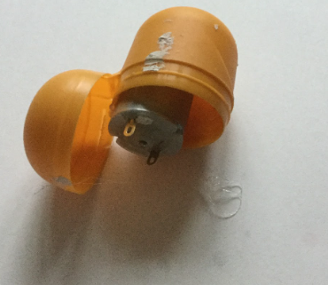
Stage 2: Sticking the pens on
This is the trickiest bit. The easiest way to do is cut a strip of tape.
Place two pens onto the tape ensuring the pens are the same length from the tape to the nib and the distance between the pens on the tape are far enough apart to place the egg between them.
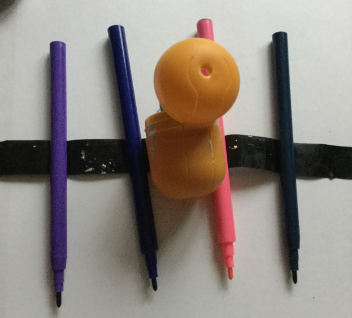
If you are using three pens, the third pen should be placed so that all three form a triangle with equal sides, that means the egg can stand-up on a piece of paper on the pen nibs, without anything supporting it.
If you are using four pens, the other two pens should be placed so that all four form a square with equal sides, that means the egg can stand-up on a piece of paper on the pen nibs, without anything supporting it.
Stage 3: Add the battery pack and go.
Using two wires connecting the battery, to the motors. Remove the nibs and set the bot off. It is hopefully vibrating and shaking and scribbling lines on the paper.
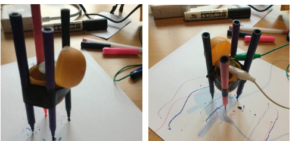
To see one in action go to: https://www.youtube.com/watch?v=NRlntdmdQRo
Stage 3: Add Control (sort of) Crumble
- Disconnect the battery connection (the connections on the motor can stay as they are).
- Connect the USB cable to the Crumble.
- To the right of theUSB connect there are two connections marked + and -:
- Connect a Red wire to the + connection and the other end to the red wire of the battery pack.
- Connect a black wire to the -- connection and the other end to the black wire of the battery pack.
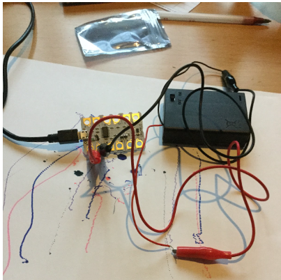
On the Crumble, on the right-side there are two motor connections connect the Motor to these connections. Don't worry about which of the motors wires is need you swap them around later.
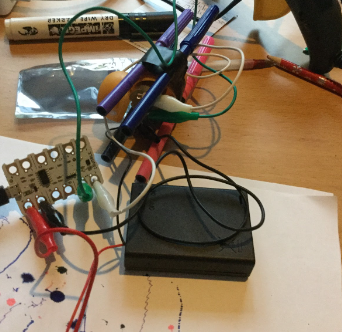
Stage 4: ALet's start programming it
The software can be found at https://redfernelectronics.co.uk/crumble-software/ it includes how to set it up on your own machine.
Start the Crumble software. Drag from the left the Program start, motor, and wait blocks. Now join the up start block at the top and the motor block next and the wait block last.
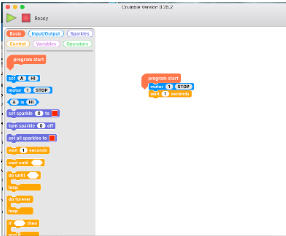
Your code should look like this:
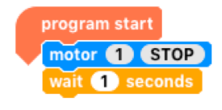
Click on the stop within the motor block. It should change to forward.
Now you are ready to make it move. Press the green arrow and with the battery pack on, it should (hopefully) keep moving.
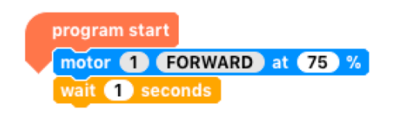
If you put a second motor block after the wait block with the stop in the block. It such then stop after 1 second of moving.
Stage 5: Making it do more
- Drag a do-until block in (found in the control menu).
- Go to variable menu and add a new variable, I have used
t, select the block markedlet=, and drag atinto the blank space. - Drag an increase block onto the screen and drag a
tinto the blank space.
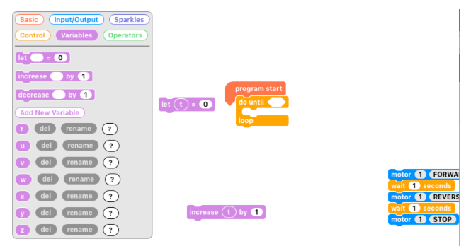
Go to the operator menu and drag onto the screen an = block, go back to variables menu and drag a t into the first space on the = block and click on the second space on the block and type in 5.
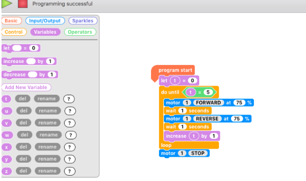
Now for the challenge put all these together to copy what is shown below. Now, put the egg-bot on the paper, with the pen lids off, press the green triangle and the motors should be spun in different directions.
This is a junkbot so it may just cause the bot to move a slightly different directions but hopefully it should just draw some squiggly lines.
Computational Thinking
Thomas's Tangles
A recently released book Teaching Computing Unplugged in Primary Schools edited by Helen Caldwell (University of Northampton) and Neil Smith (Open University) has a number of interesting chapters by authors who are passionate about how computing is taught in schools. The central theme is unplugged activities, without using computers, but still teach the fundamental of computational thinking.
Ok, confession time. I co-wrote, along with Katharine Childs (Raspberry Pi Foudation), Chapter 3 Artists so I am biased here, but I believe in the central theme of Unplugged Computing. Computing, and Computational Thinking in general, is not just about programming and using a computer (though using computers and programming are vitally important to Computing) but it is also about many other things including problem-solving, being creative and working collaboratively.
Chapter 3 is about linking these computational thinking ideas to produce visual art, by applying computing principles including repetition, following and refining algorithms, and abstraction. The chapter also looks, how these links have already being made, with examples such Sol Le Witt where not all the work that was produced by the artist himself, but some by others following his written instructions - in other words an algorithm. There is even a game Thomas's Tangles
The other chapters make links with areas such as Robots, Musicians, Explorers, Magicians, Gamers, Cooks and Scientists.
Computational Thinking
Thomas Tangles
This simplifies the algorithm Thomas' Tangles (named after my son who helped develop it) in Chapter 3 of the book discussed in http://compuationalthinking.blogspot.co.uk/2016/11/how-to-be-unplugged-artist.html
Using crayons, pencils or pens, we are going to follow an algorithm to create a random drawing. This could be done in pairs and you will need squared paper.
Person A: Rolls the dice and reads out the instructions - their role is to roll the dice, interpret the algorithm and tell the 'robot' what to do.
Person B: Is the 'robot carrying out the instructions'. The lines are solid blocks of colour so move four squares does also mean colour in the squares between the start and finish in the direction of movement.
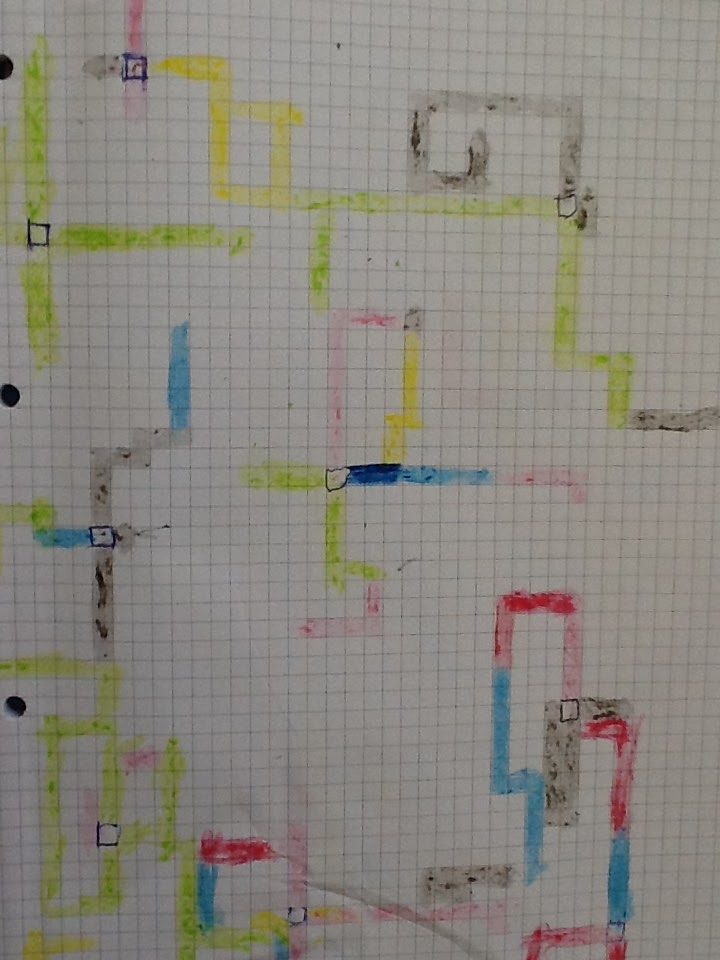
When a new central square is needed the roles of A and B swap (so A is the 'robot' and B rolls the dice and reads out the instruction). The roles keep swapping.
Start from a random square – call it the centre square
Repeat until end of game
If die roll = 1
Roll die for number of moves
move die roll number of steps up the page
If die roll = 2
Roll die for number of moves
move die roll number of steps down the page
If die roll = 3
Roll die for number of moves
move die roll number of steps to the left
If die roll = 4
Roll die for number of moves
move die roll number of steps to the right
If die roll = 5
Roll die
If die = 1 change colour to Red
If die = 2 change colour to Blue
If die = 3 change colour to Black
If die = 4 change colour to Green
If die = 5 change colour to Orange
If die = 6 change colour to Yellow
If die roll = 6
Roll die
Return to current centre square
If the second die roll=6
randomly select new centre square
If block is off the page
randomly select new centre square
The Scratch version can be here https://scratch.mit.edu/projects/135816631/ if you wish to see the code.
content waiting to be added.
Bibliography
Barr, D., Harrion, J., and Conery, L. (2011) Computational Thinking: A Digital Age Skill for Everyone Leading and Learning with Technology, ISTE, March/April 2011 [accessed via http://www.csta.acm.org/Curriculum/sub/CurrFiles/LLCTArticle.pdf on 26/12/2015]
Barr, V. and Stephenson, C. (2011) Bringing Computational Thinking to K-12, ACM Inroads, Vol 2. No 1, pp 48 - 54 [accessed via http://csta.acm.org/Curriculum/sub/CurrFiles/BarrStephensonInroadsArticle.pdf on 26/12/2015] https://doi.org/10.1145/1929887.1929905
Computing at School (2013) Computing in the National Curriculum: A guide for primary teachers [accessed via http://www.computingatschool.org.uk/data/uploads/CASPrimaryComputing.pdf on 13/3/2016]
Denning, Peter J. (2009) Beyond Computational Thinking, Communications of the ACM Vol 52, Issue 6, pp 28 - 30 [accessed via http://sgd.cs.colorado.edu/wiki/images/7/71/Denning.pdf on 26/12/2015]
DfE: Department for Education (2013) National Curriculum in England: computing programmes of study
Freedman, J. (2015) Cycloid Drawing Machine [online] URL: https://www.kickstarter.com/projects/1765367532/cycloid-drawing-machine accessed on 3/3/2016.
Google. 2016 Project Jacquard [online] URL: https://www.google.com/atap/project-jacquard/ accesed on:1/3/2016.
Knuth, D. 1968. Preface, The Art of Programming vol 1., Boston: Addison-Wesley.
Knuth, D. 1996. Foreword. In: Petkovsek, M., Wilf, H., Zeilberger, D.A=B.. Natick: A K Peters/CRC Press, vii.
Koetsier, T., 2001. On the prehistory of programmable machines: Musical automata, looms, calculators. Mechanism and Machine Theory, 36(5), 589-603. https://doi.org/10.1016/S0094-114X(01)00005-2
Menegus, B (2016) CDMS: Built with Processing [online] URL: http://wheelof.com/sketch/ accessed on 4/3/2016
MoMA. 2012. MoMA| Video Games [online] URL: http://www.moma.org/explore/inside_out/2012/11/29\video-games-14-in-the-collection-for-starters/ accessed on: 1/3/2016.
Papert, S (1993) The children's machine: Rethinking schools in the age of the computer. New York: Basic books
Pearson M (2011) Generative Art: A practical guide using Processing, New York: Manning, 3-12
Selby, C. and Woollard, J. (2013) Computational thinking: the developing definition University of Southampton [accessed via http://eprints.soton.ac.uk/356481/7/Selby_Woollard_bg_soton_eprints.pdf on 26/12/2015]
The Art Story (2016) Sol LeWitt [online] http://www.theartstory.org/artist-lewitt-sol.htm accessed on: 6/3/2016
Wing, J. (2006) Computational Thinking Communications of the ACM Vol 49 pp 33 - 35 [accessed via https://www.cs.cmu.edu/ 15110-s13/Wing06-ct.pdf on 26/12/2015]https://doi.org/10.1145/1118178.1118215
Wing, J. (2011) Computational Thinking - What and Why The Link - News from the School of Computer Science, Issue 6.0, Spring 2011 [accessed via http://www.cs.cmu.edu/sites/default/files/11-399_The_Link_Newsletter-3.pdf on 26/12/2015]
Liukas L (2015) Activity 7 The Robots Hello Ruby - Adventures in Coding, New York: Feiwel and Friends, 94-97.
Schofield, S (2016) Generative Artworks [online] URL: http://www.simonschofield.net
Turner S (2016) 3 'Art' Scratch Projects [online] URL: http://compuationalthinking.blogspot.co.uk/2016/03/3-of-my-scratch-projects-for-week.html accessed on: 12/3/2016.